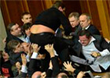

Седьмой парламентский созыв публично агонизирует. Хотя в Верховной Раде зарегистрирован законопроект о самороспуске, это вовсе не означает, что парламентарии спешат на досрочные выборы. ...

19.06.14 - 17:37
тенденции
19.06.14 - 17:37
тенденции
Седьмой парламентский созыв публично агонизирует. Хотя в Верховной Раде зарегистрирован законопроект о самороспуске, это вовсе не означает, что парламентарии спешат на досрочные выборы. ...
19.06.14 - 8:41
размышления
В наш век развитых технологий простое человеческое общение вместо привычных живых встреч, и уж тем более бумажных писем, все более сводится к мобильной связи и социальным сетям. Легко и удобно. Если бы не одно НО. ...